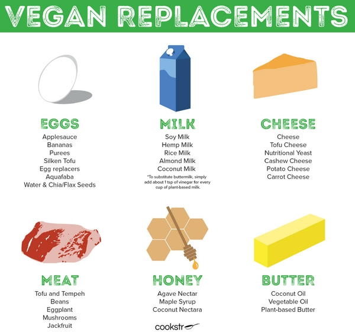

Alongside weeps for lost five cheese pizza, new converts to veganism – who are also keen bakers - may find themselves mourning the lack of something as simple as vanilla cupcakes. But whilst your mozzarella guzzling days are behind you, you don’t need to give up your baking love—as this article will prove. Any baker will know the feeling. It’s Sunday evening and you fancy whipping up a cookie (to consume yourself obvs, don't kid yourself that these will last long enough to be consumed by your colleagues). Unfortunately, everything but the corner shop is closed and the cupboards are lacking in vegan 'essentials'. No problem for the average baker - butter, flour, eggs, sugar and milk are all easy to find - but egg replacers and vegan choc chips can be harder to locate. Despite common misconceptions, vegan baking doesn’t need to include complicated ingredients only found in the deepest corners of Whole Foods.
In almost all cases, I recommend 1 small chicken egg per 1 flax egg. You can create a flax egg by combining one tbsp of ground flaxseed with 3 tbsp of water.
Depending on the recipe, you can generally substitute any non-dariy milk alternative, such as almond milk, oat milk, or soy milk
I typically substitute butter for vegan margarine, but you can also use applesauce or, in some cases, coconut oil.
Serves 1
Ingredients
1 rounded tablespoon vegan butter
2 tablespoons soft brown sugar
1 teaspoon vanilla extract
1 tablespoon pecan nuts
4 tablespoons plain (all-purpose) flour
1 tablespoon dark chocolate chips
Method
1. In a microwave-safe bowl, spoon in the vegan butter and melt in an 850W microwave for 30 seconds.
2. Once melted, stir in the brown sugar, vanilla extract, pecan nuts, and plain flour to form a dough, then stir through the chocolate chips.
3. Spoon the mixture as a single cookie onto a microwave-safe plate, then microwave for 1minute 30 seconds until cooked.
NOTE: Many supermarkets sell dark chocolate chips that are accidentally vegan (check out the WH guide to accidentally vegan foods). If you don’t have any to hand, chop up two squares of a dark chocolate bar to use in place of the chocolate chips.
Serves 12
Ingredients
180 ml (6 fl oz) plant-based milk
30 ml (1 fl oz) apple cider vinegar
400 g (14 oz) gluten-free plain (all-purpose) flour
280 g (10 oz) rapadura sugar
1 tablespoon cacao powder
2 teaspoons baking powder
1 teaspoon cream of tartar
1 teaspoon ground sea salt
100 g (3 ½ oz) coconut oil, melted
240 g (8 ½ oz) frozen raspberries, warmed and mashed to a purée
110 g (4 oz) unsweetened apple-sauce
40 ml (1¼ fl oz) lemon juice
40 g (1 ½ oz) beetroot (beet) powder
1 tablespoon vanilla extract
100 g (3 ½ oz) fresh strawberries to garnish
130 g (5 oz) vegan white chocolate, melted
50 g (1 ¾ oz) coconut butter, melted
200 ml (7 fl oz) coconut cream
200 g (7 oz) desiccated coconut
1 tablespoon arrowroot starch
1 teaspoon vanilla extract
Method
1. Line the base and sides of two 20 cm wide x 7 cm deep (8 in ~ 2 ¾ in) round springform cake tins with baking paper. Preheat the oven to 180°C (160°C fan forced/350°F).
2. Mix the milk and apple cider vinegar in a small bowl. Set aside for 10 minutes.
3. In a large bowl, sift flour, sugar, cacao powder, baking powder, cream of tartar and salt.
4. To the milk mixture add the melted coconut oil, raspberry purée, apple sauce, lemon juice, beetroot powder and vanilla. Mix well.
5. Add the wet mixture to the dry and mix to combine, then evenly distribute the batter into the prepared cake tins.
6. Bake for 25–35 minutes or until a skewer inserted into the centre of the cakes comes out clean.
7. Let the cakes cool in the tins for 10 minutes before turning out onto a wire rack to cool completely.
8. For the icing (frosting), mix all the ingredients in a high-speed blender or food processor until the icing is smooth and thick.
9. Sandwich the two cakes together using a third of the icing between the layers. Smooth the remaining icing over the entire cake and garnish with fresh strawberries. Slice and serve!
10. Store anything left in an airtight container in the fridge for up to 3 days or sliced, wrapped in plastic wrap and frozen for up to 1 month.
NOTE: You can substitute 100 g (3 ½ oz) raw beetroot purée for the beetroot powder. If you take this option, you will have to reduce the raspberry purée to 140 g (5 oz) instead of 240 g (8 ½ oz).
Makes 12
Ingredients
200 g (7 oz) gluten-free plain
(all-purpose) flour
2 teaspoons baking powder
2 tablespoons cornflour (cornstarch)
150 g (5 ½ oz) rapadura sugar
½ teaspoon ground sea salt
250 ml (8½ fl oz/1 cup) rice milk,
room temperature
80 g (2 ¾ oz) unsweetened applesauce
2 teaspoons vanilla extract
2 tablespoons lemon juice
1 teaspoon finely grated lemon zest
125 ml (4 fl oz/½ cup) lemon juice
1 teaspoon finely grated lemon zest
30 ml (1 fl oz) tinned coconut milk
1 tablespoon cornflour (cornstarch)
¼ teaspoon turmeric
60 ml (2 fl oz/¼ cup) maple syrup
400 g (14 oz) tin salt-free chickpeas,
chilled overnight
½ teaspoon cream of tartar
145 g (5 oz) caster (superfine) sugar
½ teaspoon vanilla extract
Method:
1. Preheat the oven to 170°C (150°C fan forced/340°F)
2. Line a 12-hole standard muffin tin with silicone cupcake liners.
3. In a large bowl, sift the flour, baking powder, cornflour, sugar and sea salt together. In a separate bowl mix the rice milk, applesauce, vanilla extract, lemon juice and lemon zest. Add the wet mixture to the dry and fold through until just incorporated.
4. Fill the cupcake liners until they are three-quarters full.
5. Bake for 40–45 minutes or until a skewer inserted into a cupcake comes out clean. Stand for 5 minutes before turning out, topside up, onto a wire rack to cool. To make the lemon curd, combine all the lemon curd ingredients in a small saucepan over a medium–high heat.
6. Whisk continuously for 5–7 minutes or until the mixture is smooth and thickened. Remove from the heat and allow it to cool completely. Cut a deep hole in the top of each cooled cupcake with a small piping tip. Be careful not to cut through to the bottom of the cupcake.
7. Fill each hole with lemon curd. Drain the chickpeas and reserve 145 ml (5 fl oz) of chilled chickpea water (aquafaba) in a large glass or metal mixing bowl. You want the bowl to be completely clean and free of grease You can use lemon juice to clean the bowl and rinse before use.
8. Using an electric mixer with a whisk attachment, whisk the chickpea aquafaba and cream of tartar on medium speed until stiff peaks form.
9. Continue mixing and add the sugar one tablespoon at a time until it’s incorporated. Once all the sugar is added continue whisking for a further minute.
10. Add the vanilla and whisk for another 30 seconds. Spoon the meringue into a piping (icing) bag with a large star-shaped nozzle and pipe it onto the cupcakes. Place under a preheated grill until lightly golden, or use a small blowtorch to brown them. Serve immediately and enjoy!
NOTE: You can substitute the caster sugar in the meringue with 145 g (5 oz) of rapadura sugar mixed with 1 teaspoon of arrowroot starch. It will still work; however, it will produce a flatter meringue and a less airy texture.
Head on over to Tips to learn more tricks of the trade!